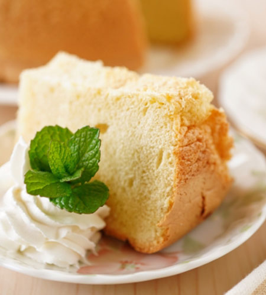

レシピのご紹介

今月のケーキ
エンジェルケーキ
名前のように純白の天使を思わせるアメリカの代表的なケーキです。卵白だけの口当たりも軽くさっぱりしていて、飽きの来ないお菓子です。カスタードクリームのような卵黄だけを使うお菓子を作る時に、一緒に作ると便利です。
材料
（21cmのリング型1台分）
- 卵白…3個
- レモン汁…1/2個分
- 砂糖…90g
- ラム酒…大さじ2
- 薄力粉…70g
作り方
- レモンの皮をすりおろし、砂糖ひとつまみと合わせておく。
- メレンゲにラム酒、レモン汁を加えます。
- ふるっておいた薄力粉を一度に加えざっくりと合わせます。
(粉が混ざりづらいですが少しぐらいならメレンゲの泡をつぶしても大丈夫です。) - 型に流し入れ、180℃のオーブンで約30～35分焼きます。竹串を刺してみて何もついてこなければ焼き上がりです。
- 焼きあがったら、竹串などで肩とケーキの間をぐるりとはがし、型から出してケーキクーラーなどで自然に冷まします。
過去のレシピ